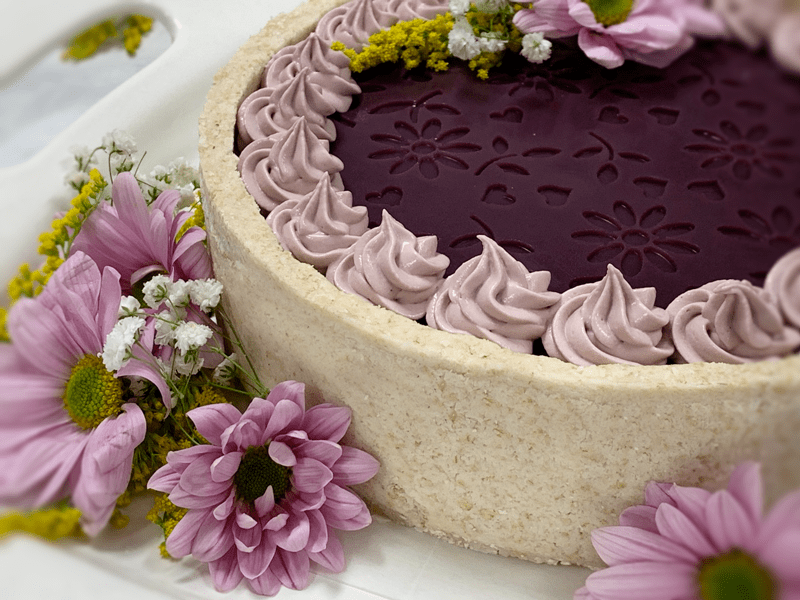

Nourishing and Quick Dessert Ideas
Raw, vegan, gluten-free desserts, they are darn near unbeatable! They are rich, decadent, and satisfying (isn’t that the definition of dessert?!) Lucky, through the power of whole foods, we can also tack on the description of nutritious! If you are new to raw, the concept may sound limiting, tedious, or even overwhelming. It is none of these, and I am here to help dispel that notion.

Indulge Without All The Guilt
Yes, you can indeed enjoy raw desserts without guilt, BUT that doesn’t mean that they are intended to be a punctuation to every meal you eat. The main thing that you must not lose sight of is that dessert is just that, a dessert. Just because they are raw, gluten-free, vegan, processed sugar-free, soy-free (free of whatever you need it to be), they still need to be revered and enjoyed as a treat.
Key Points Regarding Raw Desserts
- Raw desserts can be as healthy or unhealthy as you make them. You’re driving the “Ingredient Bus.”
- Raw desserts tend to be rich in flavor, and I find it helpful to create single-serving desserts. I will touch more on that below.
How to Make Dessert MORE Healthy
- Start with organic ingredients – I know it isn’t always easy, but do your best.
- When using whole food ingredients, make sure they are fresh. TASTE TEST, TASTE TEST. If using fruit, make sure it is sweet and ripe. If using nuts or seeds, make sure they aren’t rancid (due to their natural high fats, they are prone to spoil).
- Add superfood powders not only as a natural food coloring but to bump up the nutrients.
- Use the least amount of sugar (sweeteners) as possible.
- Eat smaller portions. Overindulging is taxing on your digestion system, causing belly aches and bloating, not to mention it challenges the waistband of your pants. (hey somebody had to say it hehe)
Single Serving Desserts
Creating single-serving desserts is, by far, my favorite way to make and serve raw desserts. It is a lesson I learned throughout the years. As I mentioned just a moment ago, raw desserts tend to be very rich in flavor, which is due to the dense nutrient-rich ingredients that we use. When I first started creating raw cheesecakes, I would make large 9″ cakes for our friend and family gatherings. And why not, decorating a whole cake is like giving Leonardo da Vinci a blank canvas.
BUT what I quickly noticed was that our Standard American Diet eaters would slice off a large piece of cake. You see, when you eat a poor highly-processed diet, you tend to eat more because the food in front of you is void of nutrients. Therefore your body keeps craving more because your dietary needs are not being met.
The fact that raw desserts are made with nutrient-dense ingredients our bodies “fuel gauge” registers “SATISFIED” much more quickly; this is my experience anyway. So what I noticed happening is that our guests would naturally take larger-than-needed pieces, enjoy bite after bite, but then find themselves unable to finish the dessert sitting before them. Unfortunately, it leads to waste and often overly stuffed bellies. So how do we get around this?
Present single-serving portions by:
- Pre-slicing cakes and pies.
- Make them in single-serving cups/dishes. I enjoy using 4-ounce Mason jars, the portion size is perfect, plus it comes with a lid to help keep it fresh.
- If serving multiple desserts and you wish for your guests to try them all, create tiny servings in perhaps 1-ounce cups or cupcake liners.
- *If people balk at the smaller-than-normal servings (I experience that every once in a while) assure them that if they STILL want more after enjoying what is in front of them, they can help themselves to more. This way, the gut is running the show, not the eyes.
MAKE AHEAD DESSERTS
To me, this is the best way to make sweet treats! Yes, it is excellent to have desserts that you can make instantly (I will touch on that below). Still, when you have desserts that we premade and stored, you immediately become the “hostess with the mostess” as you serve a decadent plate of goodies in front of your spontaneous guests.
It also saves time when prepping for large gatherings. You already have plenty of food that you have made the day of, so having the dessert(s) all ready to go ahead of time helps to reduce your stress. It also helps for those moments when you NEED (not want) a sweet treat to combat your cravings. Now, let me share some desserts with you that can be made ahead of time…
Freezer Desserts
The following desserts don’t necessarily require freezing, BUT by freezing them, you can keep them stored in the freezer for 1-3 months. Though cheesecakes aren’t typically listed as QUICK desserts, by freezing them and having a stash tucked away, they do.
Cheesecakes
If you are new to raw, cheesecakes are easy to make, there are just a few steps involved. You can start by making really simple ones without any fancy decorations. And as you build your confidence up, you can add your personal creative touch to them.
- Equipment required: high-speed blender and a food processor (unless you make them crustless).
- Make as a full-sized cheesecake or pour into single serving dish-ware.
- Freeze (well sealed) for 1-3 months. Do not freeze with decorations on it/them. Decorate the day of the event.
- Click here for my full listing of cheesecakes.
Brownies
Raw brownies are so easy to make; in fact, they fit into several signatories here. They also can be made in advance, or made on the spot (most don’t require a “set-up” time). But again, I can’t stress enough how nice it is to make up a large tray of them, cut them into 2″x2″ squares, place them in cupcake liners, and store in the freezer.
- Equipment required: typically, you will only need a food processor. A blender might be necessary if you are making a frosting.
- I like to cut my brownies into 2″x2″ square-sized pieces. Due to the richness of the raw cacao, a person is satisfied with that amount.
- Brownies can be stored in the freezer for 1-3 months. Make sure that they are well sealed, so they don’t get freezer burnt.
- You can upgrade a brownie by serving it with a scoop of raw ice cream on top.
- **Be sure to have a pitcher of cold fresh almond milk to compliment the rich chocolate brownie!
- Click here for my full listing of brownies.
Cookies
Most people may not think of cookies as a dessert, but they most certainly can be! Again they can be made ahead of time or on the spot (as needed). Cookies come in all forms; they can be frozen, eaten right away, or dehydrated/frozen or dehydrated. Ah, the beauty of raw desserts!
- Equipment required: Food processor and sometimes just a bowl and spoon!
- Just like brownies, you can upgrade cookies by placing a dollop of ice cream in between two of them to make an ice cream sandwich or warm up a cookie in the dehydrator and serve a scoop of ice cream on top.
- Depending on the occasion, you can adjust the size of the cookie to fit the function. Tiny cookies are great for taste testing when other desserts are also served. Plus, they are so darn, cute! Or you can make them extra big to create a “wow” presentation.
- Click here for my full listing of brownies.
Ice Cream / Popcycles
Who doesn’t love to open the freezer and find ice cream?! Even in the coldest of months, ice cream is a well-enjoyed dessert. Ice cream can be super simple, or it can elevate a dessert. Just like my cheesecakes, I love to make single-serving ice cream tubs in freezer-safe jars, this reduces ice crystals from forming because you’re not constantly removing a tub ice cream in and out of the freezer.
- Equipment required; blender, some time, an ice cream machine.
- Pour the ice cream mixture into single-serving containers and freeze for several months.
- You can also pour the same mixture into popsicle molds, which makes for a fun and playful treat.
- If you’re hosting a party, I will make the ice cream in popsicle molds, then provide melted chocolate and crush nuts, seeds, dried fruit in bowls so your guests can create their own custom iced treat.
- Click here for my full listing of frozen desserts.
ON – THE -SPOT – DESSERTS
Ok, folks, it doesn’t get any easier or healthier than this… Banana Ice Cream is free of gluten, dairy, soy, nuts, food coloring, and artificial ingredients! Technically, it only takes one ingredient – FROZEN bananas. I tend to add a little almond milk, but that is entirely optional. If you are hosting a dinner party, this is fun to make up on the spot because most people have no idea that frozen bananas can turn into a luxurious soft serve ice cream.
- The only piece of equipment needed is a good high-powered blender.
- Only prep work needed is to freeze peeled, ripe bananas.
- It can be made with ONE ingredient (spoiler alert… frozen bananas), or you can add fresh fruit, nuts, seeds, coconut, superfoods to it, making it delicious and nutritious.
- Best to make as needed. It takes less than 10 minutes to make.
- Provide a vast array of toppings (nuts, seeds, shredded dried coconut, raisins, etc.) and let the fun begin!
Liquid chocolate… need I explain?! This chocolate is something that you can make on a whim, providing you keep your pantry stocked of the raw basics. It’s a great way to connect with others. Someone can make the chocolate sauce; another person could chop of fresh fruit to dip in the chocolate… laughter, messes, finger-licking, spoon licking, chatter. I can hear it from here!
- It can be made in a high-powered blender.
- This hardening chocolate is great to dip fruit into (bananas, strawberries, raspberries, any fruit!), you can also dip raw cookies into it, or how about drizzling it over banana ice cream?!
- For another quick dessert idea… make the chocolate sauce and then add enough nuts, seeds, and dried fruits to where they are all coated in chocolate. Pour the mixture onto a lined baking sheet and slide into the freezer for 30 minutes. Instant chocolate bark candy!
I could go on and on, but hopefully, the samples that I shared with you got your tastebuds singing and your thoughts spinning with ideas. Enjoy, have fun, and eat responsibly. amie sue
P.S. For more inspiration, be sure to check out the other recipe categories; Chocolate, Cookies Nuggets, and Balls, Cakes and Pies, Frozen Desserts, Pasteries, and Pudding and Mousse.
© AmieSue.com